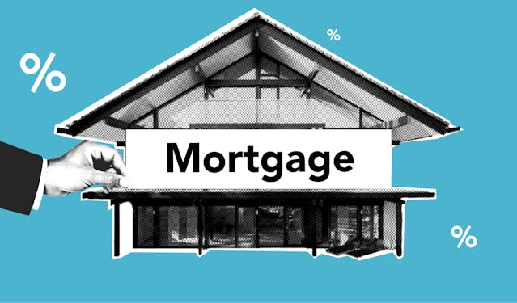

Skilled in Power BI, I analyzed survey data for CodeX, a German beverage company entering the Indian market, creating dashboards that uncovered key consumer trends like health-conscious preferences and brand reputation. These insights informed strategic decisions, showcasing my ability to turn data into actionable business strategies. Explore The entire Project Below


In the Card Utilization project, I used advanced Excel functions like INDEX MATCH and pivot tables to analyze customer spending habits. The resulting dashboard provided actionable insights, showcasing my ability to drive strategic decisions and optimize financial outcomes.View the Full Project

In the sales promotions project, I used Power BI to create dynamic dashboards that uncovered key trends and patterns. This showcased my ability to transform complex data into actionable insights, empowering stakeholders to make confident, data-driven decisions.View the Full Project

In the housing project, I used SQL to clean and standardize real estate data, ensuring accuracy and reliability. By resolving inconsistencies through complex queries, I enabled insightful analysis and demonstrated a commitment to data precision. View the Full Project

In the COVID project, I used SQL to explore complex datasets, uncovering key trends and correlations through advanced queries. This transformed raw data into meaningful insights, enabling informed decision-making.View the Full Project.